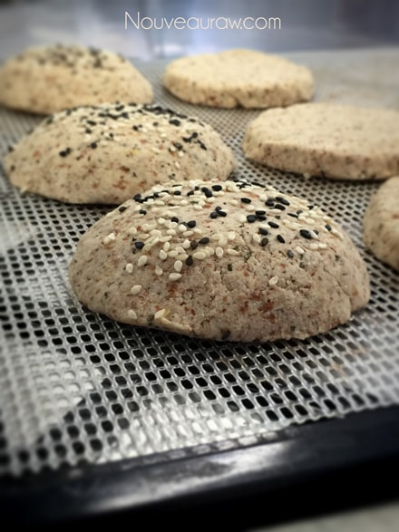

Veggie Burger Buns
~ raw, vegan, gluten-free ~
The bun, the glorious bun! I really can’t remember what it feels like to hold a hamburger or sandwich wrapped up in a bun! That was until today.
“Lettuce us,” all take a moment and pause… let us part take of this silence to give thanks to the all mighty bun. Also known as a Burger Snuggie, the Paddy Protector, the Burger Hugger… the bun plays the role of supporting the cast, the leading star known as the
Nutless Veggie Burger. Such silliness, what can I say… food brings me joy.
In this bun recipe, I have used both Irish Moss gel and kelp paste. To learn more about Irish moss and how to make a gel, please click (
here). Kelp paste is an excellent alternative to Irish moss, and you can learn all about it (
here). I highly recommend using one or the other because it gives this bread a great texture that can often be hard to find in “raw” breads.
If all else fails and you don’t have either, can’t find it, or don’t want to use either one of those, you can always give psyllium a whirl. I have tested it in this particular recipe, but it tends to provide a recipe that “spongy” texture, which is what we are after. Try 1 Tbsp of ground psyllium. With psyllium and as with foods that have been dehydrated, be sure to increase your water intake. I hope you enjoy this recipe.
 Ingredients:
Ingredients:
Yields 6 full bun sets (1/3 cup for top and 1/4 cup for bottom)
Preparation:
- To make the oat flour, place the rolled oats in a food processor fitted with the “S” blade. Process until it reaches a fine flour consistency.
- Add the ground flax, coconut flour, Italian seasoning, and salt. Pulse till mixed.
- Add almond pulp, Irish moss, date paste, and lemon juice. Blend till everything is well incorporated.
- Depending on how moist your almond pulp is, you may need to add water, so the dough sticks together nicely. If you do, do this by adding 1 Tbsp at a time. If the bread cracks a lot while forming it, it needs a bit more water.
- If you don’t have Irish Moss gel or the kelp paste, you can try adding 1 Tbsp of psyllium husk to help give the bread a sponginess.
- I used 1/3 cup of dough for the top bun and 1/4 cup of dough for the bottom bun. See the photo below on how I molded the bun shape.
- Place bread on the mesh sheet that comes with the dehydrator and dehydrate at 145 degrees for 1 hour, then reduce to 115 degrees (F) for about 6-8 hours.
- As an indicator, if it is dry enough, touch the center of the bread slices. You don’t want it to be doughy, but you also don’t want the bread to dry out too much.
- Store in a sealed container in the fridge to extend shelf life.
The Institute of Culinary Ingredients™
- What is Himalayan pink salt, and does it matter? Click (here) to read more about it.
- Are oats gluten-free? Yes, read more about that (here).
- Are oats raw? Yes, they can be found. Click (here) to learn more.
- Do I need to soak and dehydrate oats? Not required but recommended. Click (here) to see why.
- Learn how to grind flaxseeds for ultimate freshness and nutrition. Click (here).
Culinary Explanations:
- Why do I start the dehydrator at 145 degrees (F)? Click (here) to learn the reason behind this.
- When working with fresh ingredients, it is essential to taste test as you build a recipe. Learn why (here).
- Don’t own a dehydrator? Learn how to use your oven (here). I do, however, honestly believe that it is a worthwhile investment. Click (here) to learn what I use.
Since raw breads don’t rise during the dehydration process,
you want to shape them to look exactly how you expect a
but to look.

© AmieSue.com